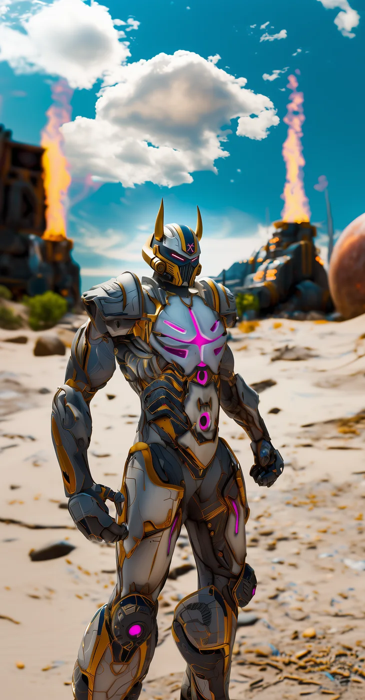

©
©

Finira
North Marauder · Recruit
Finira trains on a frozen coast, hurling boulders into the sea until the waves give up. The Crush Well splashes force through the flanks, and doubles when only one enemy is left. Like every North Marauder, Finira answers the horn of the Longhouse.